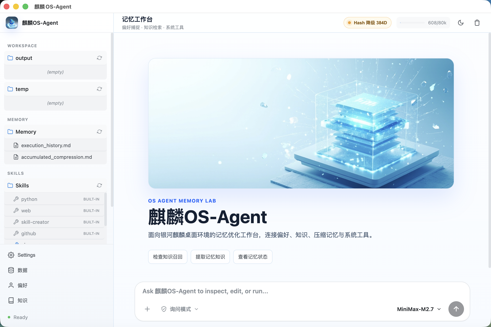
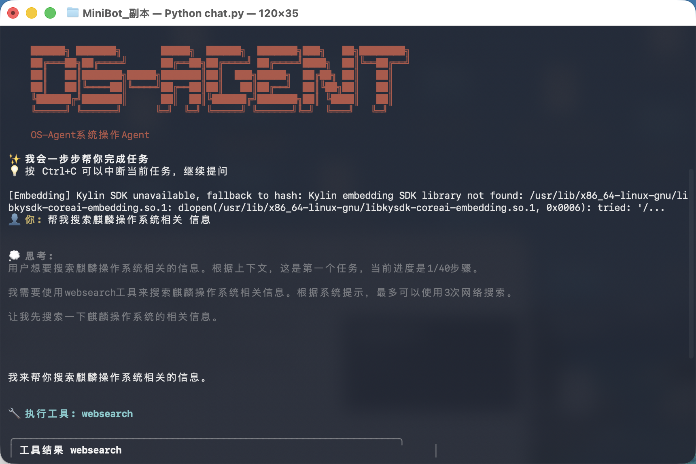

循环决策执行器
AI 引擎持续分析状态、规划下一步、调用工具、验证结果，直到任务完成或需要用户补充信息。
创新点不只在记忆模块：我们先做了一个能真实执行任务的麒麟OS-Agent，再让每一次执行变成下一次可复用的工作能力。
Self-developed OS-Agent
项目不是外挂式记忆库，而是从任务执行、工具调用、桌面交互到长期记忆都打通的完整 Agent 系统。记忆优化发生在真实任务流里，因此偏好和知识来自可验证的行为数据。
AI 引擎持续分析状态、规划下一步、调用工具、验证结果，直到任务完成或需要用户补充信息。
Shell、文件、PDF、网页搜索、代码搜索、定时器、发送文件、Skill 加载等能力统一进入可记录的工具层。
同一个执行核心可在终端、桌面端和飞书网关中运行，适配开发、办公协作和长任务场景。
高风险工具调用先进入确认链路，执行过程写入历史，为后续偏好抽取和安全审计提供数据来源。
内置与工作区 Skills 可按需加载，把领域知识、脚本和操作流程扩展进同一套 Agent 上下文。
桌面端把聊天、文件、记忆、偏好、知识库、向量状态和设置管理汇成可演示的产品界面。
Capability Map
统一接入工具执行结果、用户行为和手动配置，先清洗、标准化、校验质量，再进入偏好和知识链路。
data_integrator.py
从工具使用、输出格式和安全动作中提取操作习惯、输出风格、安全策略，并保留版本历史。
preference_manager.py
把工作流、成功案例、模板、事实和规则保存为可搜索知识，支持标签、来源、置信度和版本字段。
knowledge_base.py
新旧知识相似或同标签内容不一致时生成冲突记录，并支持保留、替换、按置信度选择或合并。
ConflictStrategy
优先对接银河麒麟 embedding SDK；开发环境使用确定性轻量向量 fallback，保证同一套检索路径可测试。
embedding_provider.py
偏好、知识、记忆和数据均有清理入口；命令类数据在入库前做危险模式校验，工具执行前支持审批。
approval + clear
当前任务历史被压缩成摘要，完整过程按日期归档，再同步为知识库条目，让长期记忆能被下一次任务召回。
memory_manager.py
Agent Capability Surface
自研 OS-Agent 已具备任务规划、工具调度、桌面工作台、Skills 扩展、飞书网关、命令审批和文件交付能力。这些执行数据反过来成为偏好记忆和知识记忆的高质量来源。
Memory Pipeline
工具结果、用户行为和手动配置进入统一模型，记录来源、时间、类型、质量等级、标签和任务 ID。
entry = ingest_tool_result(tool, params, result)
validate_data(entry)
append_jsonl(raw_data)Implementation Evidence
桌面端不只是聊天窗口，它提供工作区文件、记忆文件、Skills、数据整合、偏好记忆、知识库、向量引擎状态和设置管理，形成完整的 OS-Agent 操作台。

统计总条目、工具结果、用户行为、手动配置，并支持手动注入配置和 AI 提取偏好。
按操作习惯、输出风格、安全策略、AI 行为、工作流和自定义分类维护，支持快照。
展示总条目、工作流、成功案例、冲突数，支持按类型搜索和从完整记忆提取知识。
Shell、文件写入、删除、移动等动作可进入确认流程，降低自动执行的安全风险。
Validation Targets
页面重点展示的是可验证的能力：偏好提取是否准确、知识是否能召回、检索是否足够快、冲突处理是否正确。项目中的数据文件、向量状态和执行历史可以直接作为测试报告素材。
Run Locally
pip install -e .
python chat.py
python chat.py desktop
python chat.py gateway
